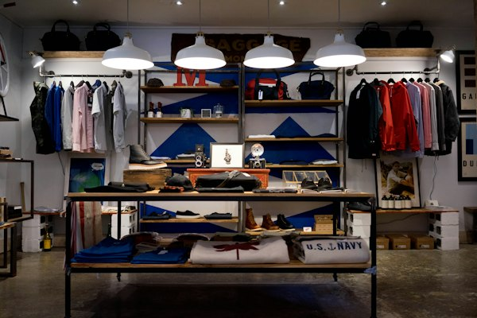

Business websites built to last
A clear, fast site that explains your services, answers the questions buyers ask, and gives you a sensible way to edit pages without calling a developer every time.
Stand on Church Street at lunchtime and you can see the competition. Accountants above the retail strip, clinics a few blocks from the courts, trades and fitout firms quoting jobs across the river. Most of them have a website that was built once and never touched again. It loads slowly on a phone, buries the phone number, and rarely appears when someone two streets away searches for exactly that service.
Onva Labs is a web development company Parramatta businesses use to fix that. We design and build sites that load quickly, read clearly on a small screen, and are structured so Google can tell what you do and where you do it. Website design Parramatta owners can actually update, connected to the enquiry forms, booking tools and reporting you already rely on.
Six areas of work we take on for businesses across the Parramatta CBD and the suburbs around it, from a first site to custom software behind the scenes.
A clear, fast site that explains your services, answers the questions buyers ask, and gives you a sensible way to edit pages without calling a developer every time.

If your current site reads like a brochure from another decade, we rework the structure, writing and layout so visitors find what they came for quickly.

Page structure, location content and Google Business Profile work, so someone searching from Merrylands or Northmead finds your business instead of a national directory listing.
Product pages, payments and booking flows that work on a phone, with stock and order information flowing into the systems your team already uses.

As a custom software developer Parramatta teams can brief directly, we build quoting tools, client portals and internal dashboards around how you actually work.
Hosting suited to Australian audiences, with updates, backups, security patching and plain-language reporting, so the site stays quick and dependable long after launch day.
We write for the area you actually serve, whether that is the health and research precinct at Westmead, the restaurant and business strip through Harris Park, or the streets around Merrylands town centre.
Performance is part of the build, not an afterthought: we aim for LCP under 2.5 seconds, INP under 200 milliseconds and CLS under 0.1 on the pages that matter most.
You deal with the people doing the work. A web designer Parramatta owners can call directly beats a ticket queue when a price list needs changing before Monday.
We handle the practical compliance details properly, from Privacy Act 1988 obligations around the data your forms collect to claims on your pages that sit comfortably within Australian Consumer Law.
We learn what you sell, who buys it, and which enquiries are worth more than the rest.
Site structure, page priorities and search terms mapped out before anyone opens a design tool.
Design and development together, reviewed on real phones and laptops as each section comes together.
After launch we watch enquiries, search terms and speed, then refine the pages doing the heavy lifting.
Three services Parramatta clients commonly pair with a new site, depending on whether the priority is launching, selling online or being found.

A straightforward, well-built site for businesses that need a credible presence online quickly without a long project behind it.
View serviceSearch work for businesses that want to be found locally, including the content and structure that search engines and AI tools read.
View service
Online stores with payments, stock and shipping set up for Australian sellers who need orders handled without constant manual work.
View serviceNo. Much of our work is web development near Parramatta rather than inside the CBD. We build for practices and suppliers around the hospital and research precinct, which makes website design Westmead organisations need quite different from a retail site, and for quieter pockets like Northmead, where a service business mostly competes on being easy to find and contact.
Yes. Local visibility comes from a few things working together: pages that clearly state the services and areas you cover, a Google Business Profile kept accurate and current, and a site fast enough that people do not give up before it loads. As an SEO agency Parramatta businesses work with, we also track which searches bring real enquiries rather than reporting on traffic alone.
Often. A website developer Parramatta teams hire for a brochure site frequently ends up building the tools behind it: quoting calculators, booking systems, client portals or an integration with the software your office already runs. We also act as the digital marketing agency Parramatta clients use for search and content once the site is live, so build and promotion stay joined up.
Tell us what your business does and who you want to reach. We will come back with a plan, a scope and an honest view of what it takes.